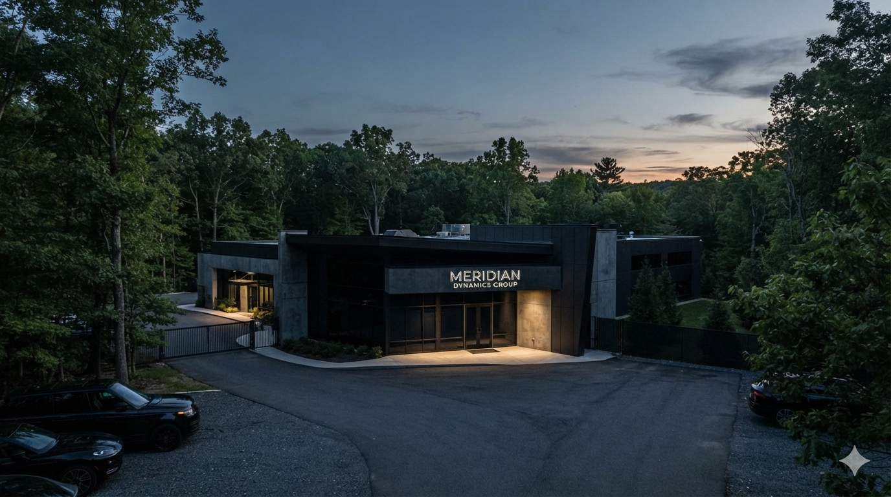

Year 1
Meridian Dynamics Group is founded with a single contract: predictive load balancing for a regional power cooperative. The founding team consisted of four engineers and a single rented office above a hardware store.
Founded over a decade ago by a small team of infrastructure engineers, Meridian Dynamics Group has grown from a regional consultancy into a systems engineering firm operating across multiple sectors. Our early work focused on load-balancing for municipal power grids; our current work is, by contractual necessity, described in less detail.

Meridian Dynamics Group is founded with a single contract: predictive load balancing for a regional power cooperative. The founding team consisted of four engineers and a single rented office above a hardware store.
Expansion into transit network optimization. First government research partnership established, focused on adaptive traffic control for a mid-sized metro authority. The company relocates to its current campus.
Internal research division formed to explore adaptive, self-correcting control architectures — early work that would later become Project MERIDIAN-0. Dr. Elena Voss is brought on to lead the division, recruited from a university lab specializing in distributed cognition models.
A significant federal research contract is discontinued following a routine funding review. Internal restructuring follows. Several senior researchers depart the company within the same fiscal quarter. Internal communications regarding this period remain sealed under standard employment agreements.
Meridian Dynamics Group continues to operate across our core infrastructure sectors, with a renewed focus on grid resilience and transit optimization. Questions regarding our discontinued research division are, per company policy, directed to Communications.
Systems that work quietly, without needing to explain themselves. We measure success not by what our systems announce, but by what they quietly prevent from happening in the first place.
Not every partnership needs a press release. Not every project needs to be finished to be considered complete, contractually speaking. We've found that our most successful work is often the work nobody outside the contract ever hears about.
We design systems that learn from their environment. Some of them learned faster than we expected. We consider this a design achievement first, and a matter for internal review second.
Meridian Dynamics Group is led by engineers, not by a communications strategy. Our leadership team believes that infrastructure work — real infrastructure work — rarely photographs well and almost never trends. We have built our reputation on being the firm regulators call first and journalists call last, and we intend to keep it that way.
Meridian Dynamics Group maintains active compliance with regional grid-reliability standards and holds clearance for select government infrastructure contracts. Specific certification details are available to verified partners upon request. As with most of our documentation, general public disclosure is limited by the nature of the sector we operate in.